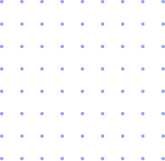

Katze


Start a Campaign
Campaigns are a way of organizing tasks requests, so that one can track progress among tasks, or modify how categorization is done.
View Campaigns
Campaigns
Create, edit, and manage your campaigns here!
There's nothing here!